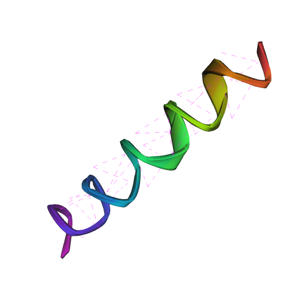
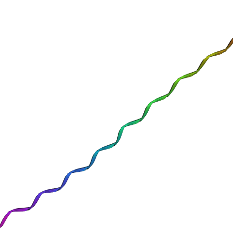
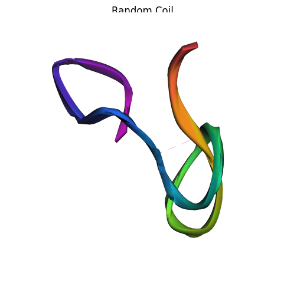
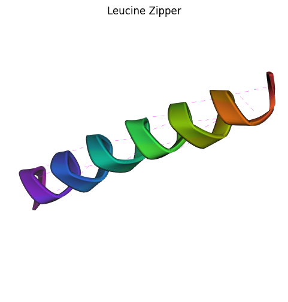
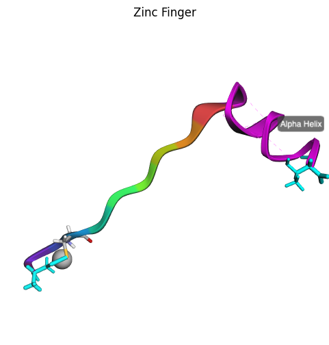
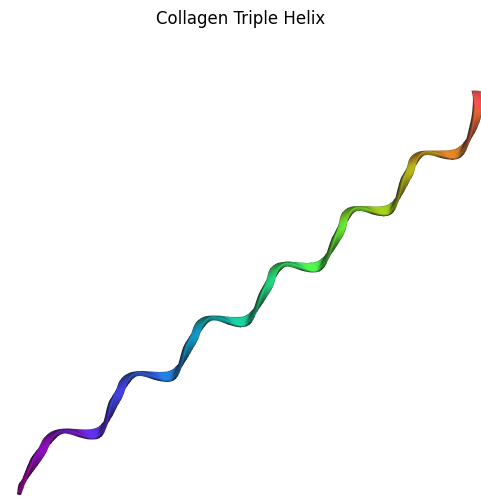
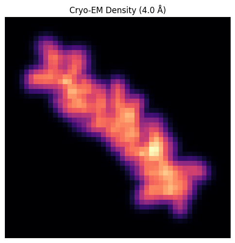
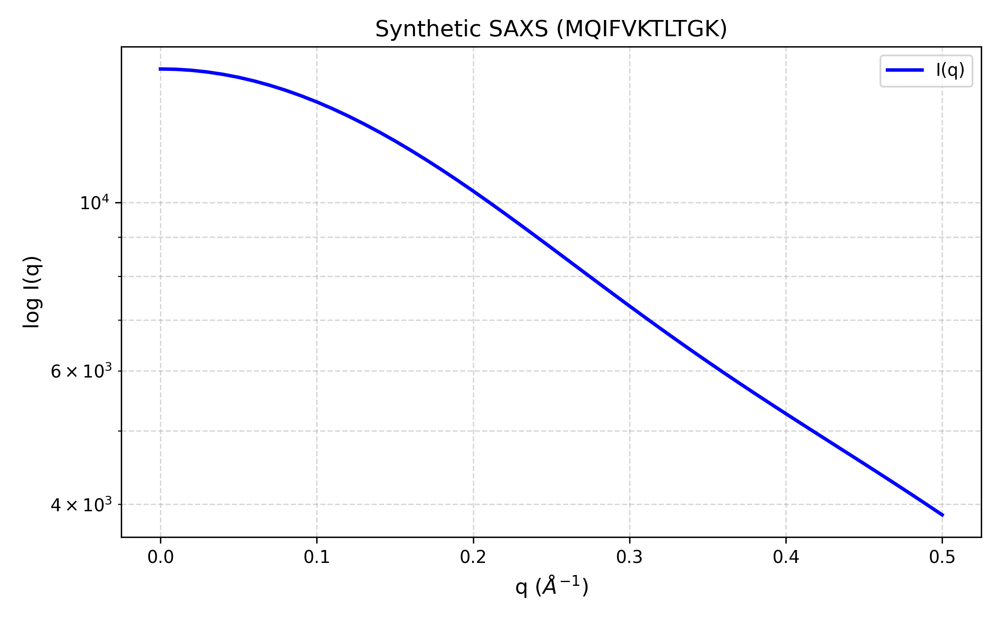

Examples Gallery
Browse inspiring examples and copy-paste commands to get started quickly.
Basic Structures
Alpha Helix
The most common secondary structure in proteins.

synth-pdb --length 20 --conformation alpha --visualize
Features: - 3.6 residues per turn - 5.4 Å pitch - Hydrogen bonds between i and i+4 residues
Beta Sheet
Extended conformation with characteristic pleated structure.

synth-pdb --length 20 --conformation beta --visualize
Features: - Extended backbone (phi ≈ -120°, psi ≈ +120°) - 3.3 Å between residues - Parallel or antiparallel arrangements
Random Coil
Disordered structure with diverse conformations.

synth-pdb --length 20 --conformation random --visualize
Features: - Ramachandran angles sampled from allowed regions - No regular secondary structure - Useful for testing flexibility
Biologically-Inspired Structures
Leucine Zipper
Classic coiled-coil motif with hydrophobic interface.

synth-pdb --sequence "LKELEKELEKELEKELEKELEKEL" \
--conformation alpha \
--minimize \
--visualize
Scientific Context: - Heptad repeat pattern (a-b-c-d-e-f-g) - Leucines at 'a' and 'd' positions form hydrophobic core - Found in transcription factors (e.g., GCN4, c-Fos, c-Jun)
Zinc Finger
DNA-binding motif coordinating Zn²⁺ ion.

synth-pdb --sequence "CPHCGKSFSQKSDLVKHQRT" \
--structure "1-10:beta,11-20:alpha" \
--metal-ions auto \
--minimize \
--visualize
Scientific Context: - Cys₂His₂ coordination of Zn²⁺ - Beta-hairpin + alpha-helix architecture - Found in transcription factors (e.g., TFIIIA, Sp1)
Collagen Triple Helix
Unique left-handed helix with Gly-X-Y repeats.

synth-pdb --sequence "GPPGPPGPPGPPGPPGPPGPP" \
--conformation polyproline \
--minimize \
--visualize
Scientific Context: - Gly-Pro-Pro repeat pattern - Left-handed helix (opposite of alpha helix) - Three chains intertwine to form triple helix
Silk Fibroin
Beta-sheet-rich structure with Ala-Gly repeats.
synth-pdb --sequence "AGAGAGAGAGAGAGAGAGAG" \
--conformation beta \
--minimize \
--visualize
Scientific Context: - Alanine-glycine repeats - Antiparallel beta sheets - High tensile strength
Advanced Features
Cyclic Peptide
Head-to-tail cyclized structure.
synth-pdb --sequence "GGGGGGGGGGGG" \
--cyclic \
--minimize \
--visualize
Applications: - Drug design (improved stability) - Examples: Cyclosporine A, Oxytocin
Disulfide Bonds
Covalent cross-links between cysteine residues.
synth-pdb --sequence "CGGGGGGGGGGC" \
--conformation alpha \
--minimize \
--visualize
Features: - Automatic detection of Cys pairs within 2.0-2.2 Å - Stabilizes protein structure - Common in extracellular proteins
Mixed Secondary Structures
Helix-turn-helix motif.
synth-pdb --sequence "ACDEFGHIKLMNPQRSTVWY" \
--structure "1-7:alpha,8-13:random,14-20:alpha" \
--minimize \
--visualize
Features: - Multiple secondary structure regions - Realistic protein architecture - Useful for testing fold recognition
D-Amino Acids
Mirror-image amino acids for peptide design.
synth-pdb --sequence "ALA-dALA-GLY-dGLY-SER-dSER" \
--conformation alpha \
--minimize \
--visualize
Applications: - Protease resistance - Drug design - Retro-inverso peptides
NMR Data Generation
Chemical Shifts
Generate structure with predicted NMR chemical shifts.
synth-pdb --length 30 \
--conformation alpha \
--gen-shifts \
--output nmr_structure.pdb
Output: NEF file with ¹H, ¹³C, ¹⁵N chemical shifts
Relaxation Rates
Generate structure with NMR relaxation data.
synth-pdb --length 30 \
--conformation alpha \
--gen-relax \
--output nmr_structure.pdb
Output: NEF file with R₁, R₂, NOE values
NOE Restraints
Generate distance restraints for structure calculation.
synth-pdb --length 30 \
--conformation alpha \
--gen-nef \
--output nmr_structure.pdb
Output: NEF file with NOE distance restraints
Dataset Generation
Bulk Generation
Generate 1,000 diverse structures for ML training.
synth-pdb --mode dataset \
--num-samples 1000 \
--min-length 10 \
--max-length 50 \
--output ./training_data
Output Structure:
training_data/
├── dataset_manifest.csv
├── train/ (800 structures)
└── test/ (200 structures)
Hard Decoys
Generate challenging negative samples.
synth-pdb --mode decoys \
--sequence ACDEFGHIKLMNPQRSTVWY \
--drift 5.0 \
--num-samples 100 \
--output ./decoys
Use Cases: - Training robust AI models - Testing structure validation tools - Benchmarking scoring functions
Multimodal Observables
Simulate integrated data from multiple structural biology techniques. For a hands-on demonstration, see the Cryo-EM & SAXS Lab.
Cryo-EM Density Maps
Generate 3D density volumes at a specific resolution.

synth-pdb --mode cryo-em \
--sequence "MEELQK" \
--resolution 4.0 \
--output synthetic_map.mrc
Scientific Context: - Simulates electron density at different resolutions (3.0Å - 10Å). - Essential for testing map-to-model fitting algorithms. - Supports ensemble averaging for flexible proteins.
SAXS Profiles
Simulate Small-Angle X-ray Scattering solution data.

synth-pdb --mode saxs \
--sequence "NSDSECPLSHDGYCLHDGVCMYIEALDKY" \
--q-max 0.4 \
--output protein_saxs.dat
Scientific Context: - Uses the Debye formula to compute $I(q)$ vs $q$. - Probes the global shape and "compactness" of a protein. - Includes solvent subtraction (hydration shell) effects.
Docking Preparation
Convert PDB to PQR for electrostatic and docking software.
synth-pdb --mode docking \
--sequence "ACDEFGHIK" \
--output ready_for_docking.pqr
Scientific Context: - Assigns partial charges and Van der Waals radii. - Uses OpenMM and AMBER forcefields for parameterization. - Standard input for APBS and many protein-ligand docking engines.
Next Steps
- Biologically-Inspired Examples - More detailed biological examples
- Visualization Examples - Advanced visualization techniques
- Advanced Features - Expert-level usage
- User Guides - Comprehensive guides for different users